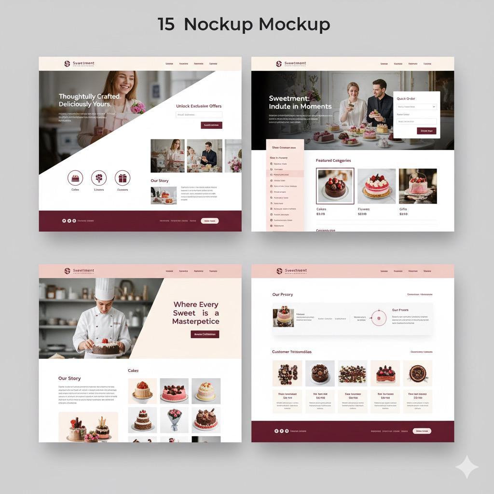
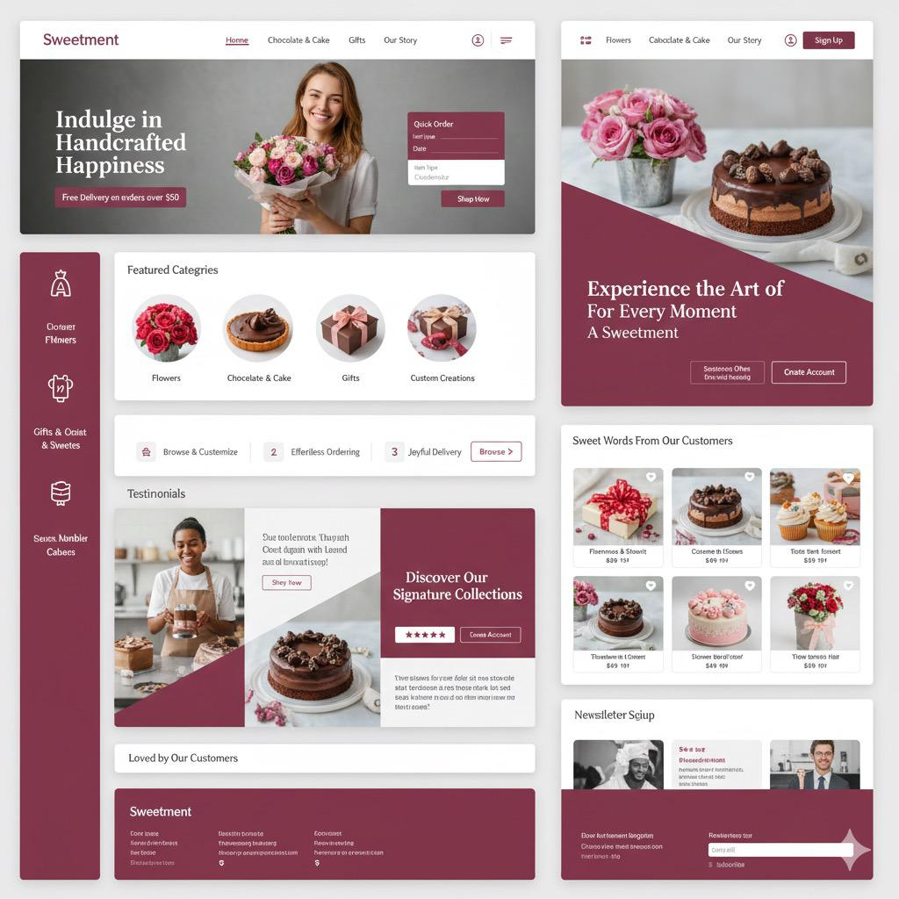
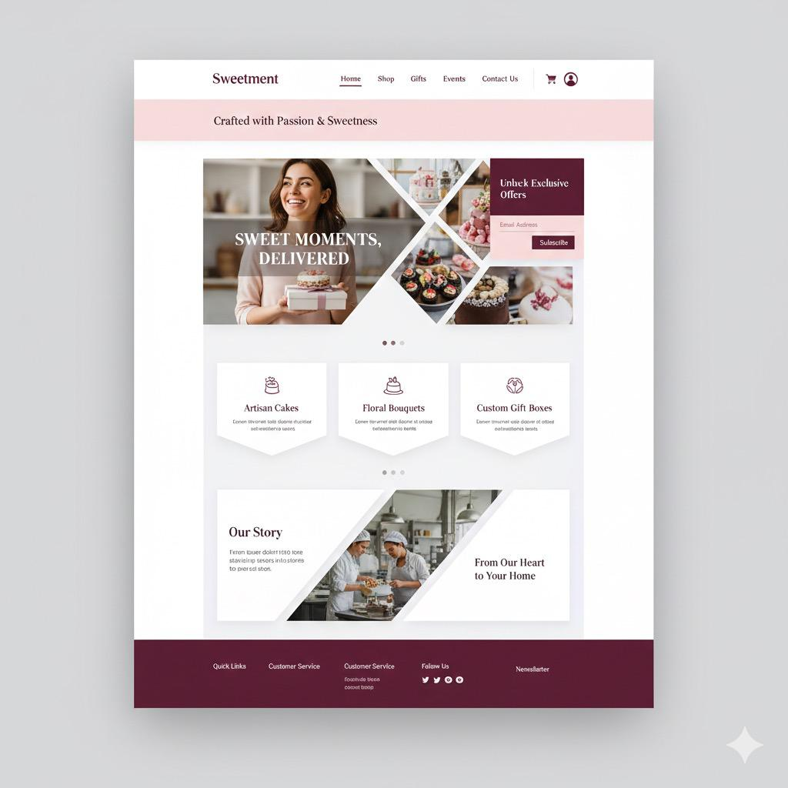
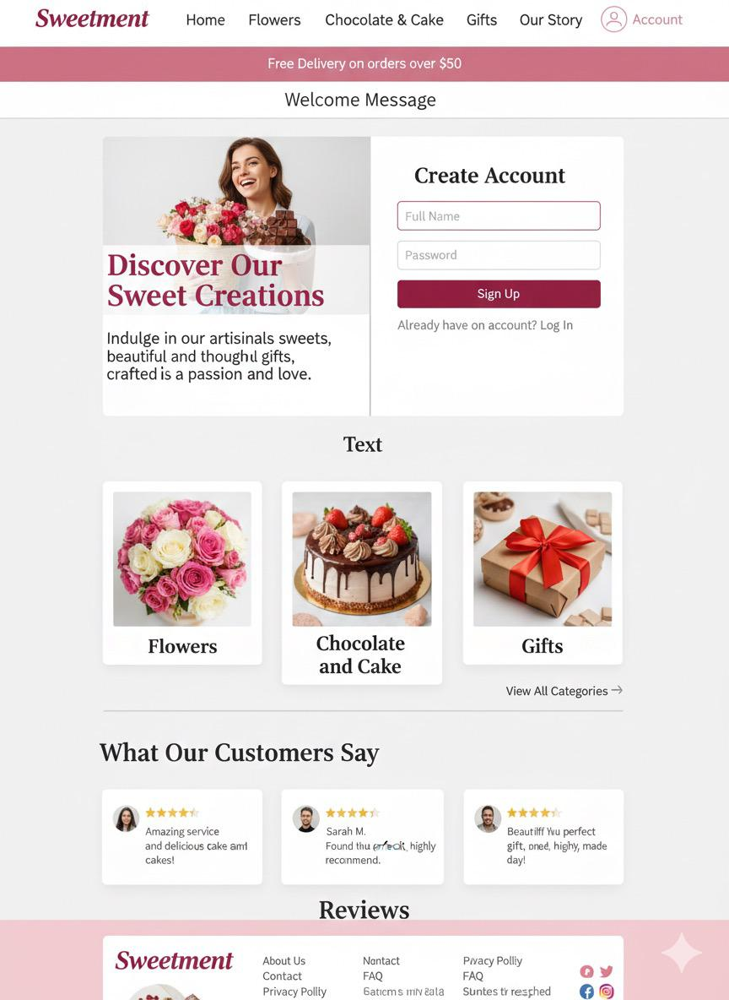
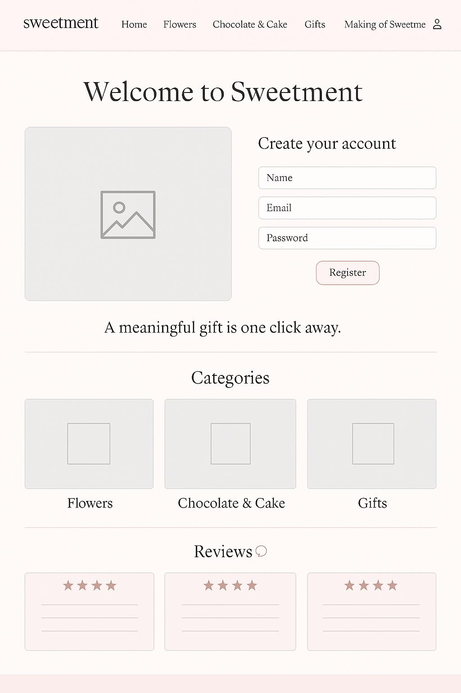
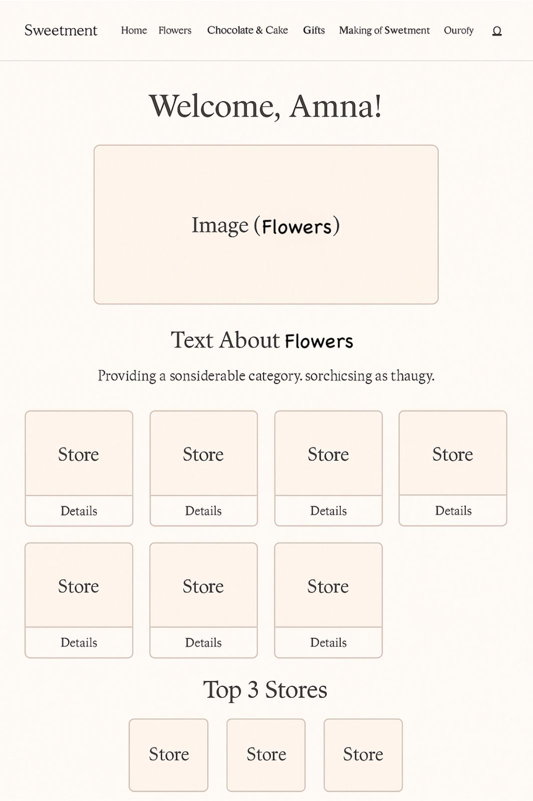
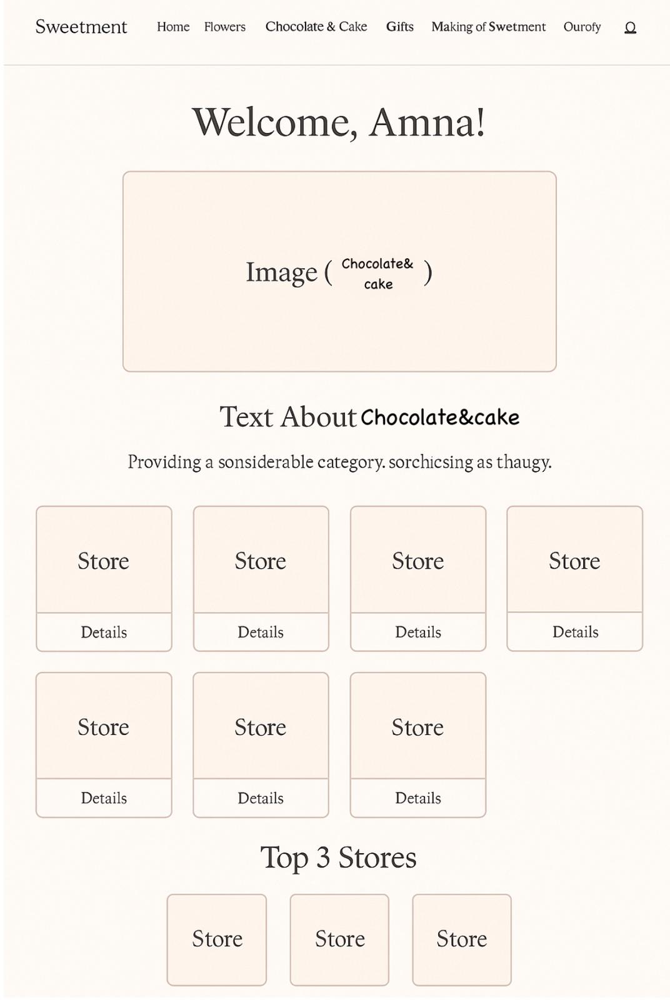
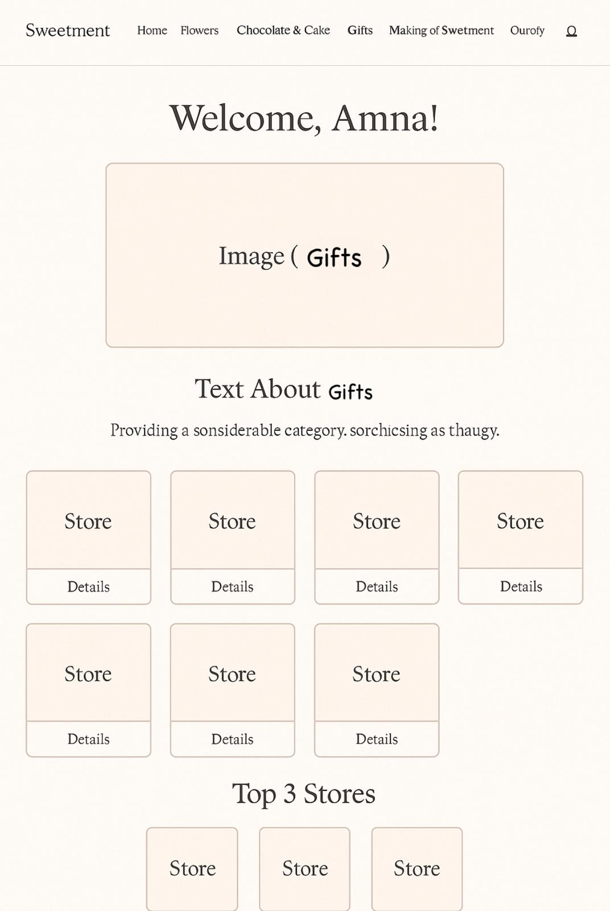
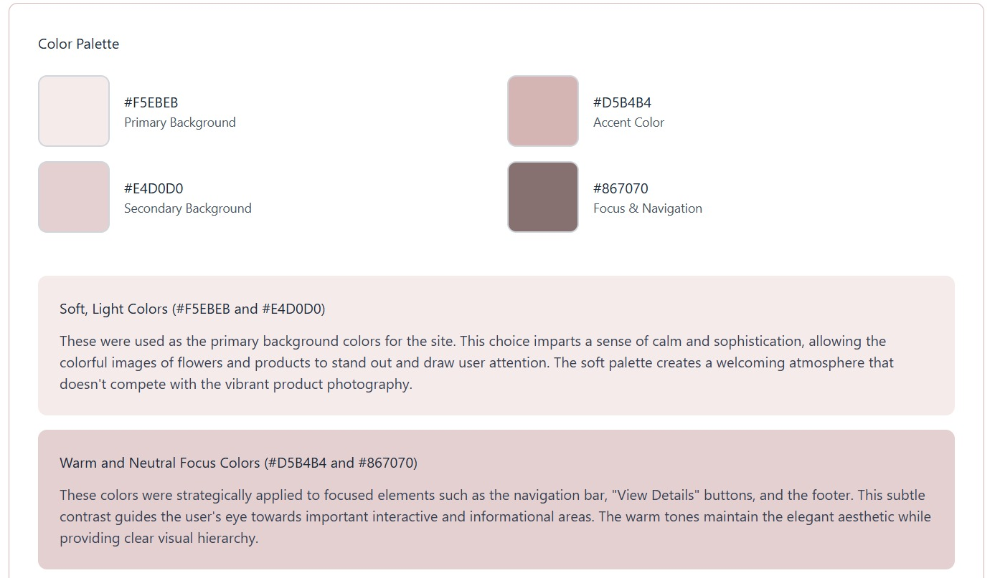

During our first meeting, we started by discussing and suggesting ideas for the user interface, and we tried to create a mockup that could represent the closest visual idea of how our website might look. The purpose was to have a general guideline for the web structure. We decided to include a Navbar on all pages to make navigation easier for the user. And like most websites, ours needed a footer that contains contact information.



When the user first opens the website, they will find a Register button in the Navbar that takes them to the registration form. After submitting their information, their name appears along with a Welcome message. Below the welcome message and next to the registration form, we added an image that represents the products offered by the website. Scrolling down, there are three cards for the three main categories. Clicking any of them redirects the user to the corresponding page.


We followed the same design structure across all three category pages. Each page includes a short phrase describing its purpose along with an image. Below the text and image, we added several store cards, each containing a button that shows the store’s details (name, location, and contact information). At the end of each page, we added a “Top 3 Stores” section. At first, we considered adding a filter feature, but eventually decided it wasn’t necessary.



The Making of page includes all the ideas and concepts behind the website — some that were applied and others that remained as drafts to help shape the final design. It includes a total of six pages, plus all the design details such as the color palette, images, and fonts used.

In this page, we explained how the idea started, what challenges we faced during the development process, and what new things we learned while working on the project. We also added a section titled “What we’re proud of & Fun Fact”, where we shared how we divided the work in a light and friendly tone. To make the page more lively, we added some pictures as well.
We used four main tools while building the website: HTML, CSS, JavaScript, and Bootstrap.
• HTML was used as the core structure for all the pages.
• CSS was used to style the pages, customize fonts, colors, layouts, and match the visual identity of the project.
• JavaScript was used in a simple and clear way to activate the registration process and display the personalized Welcome message after the user registers.
• Finally, Bootstrap helped us design the pages efficiently, ensuring consistency across different screen sizes without building everything from scratch.